空间与层次
雪山、村落、湖面与海岸画面通过远中近景组织空间，人物为环境提供观看尺度。
04 / CONTENT / 摄影
个人摄影与观察
MY ROLE
这组个人摄影材料以十六张照片呈现环境、人物与自然细节，组成关于观看距离和空间关系的视觉集合。
OVERVIEW
这组照片从雪山村落、湖泊与海岸延伸到校园入口和枝头小鸟，既呈现环境的尺度，也保留人物、建筑与自然之间的关系。画面通过远近层次、空间留白和光色变化组织视线。它可以作为视觉观察的集合，展示如何选择观看位置、安排主体和背景，并让不同题材形成一致的阅读节奏。
CAPABILITY IN PRACTICE
雪山、村落、湖面与海岸画面通过远中近景组织空间，人物为环境提供观看尺度。
校园骑行者、鸟居间的人物和枝头小鸟展示主体位置、重复线条与背景简化。
不同题材中的留白、明暗和色彩关系共同形成图像阅读的节奏。
THE COMPLETE COLLECTION
16 张摄影作品，保留完整构图；点击图片可放大查看。
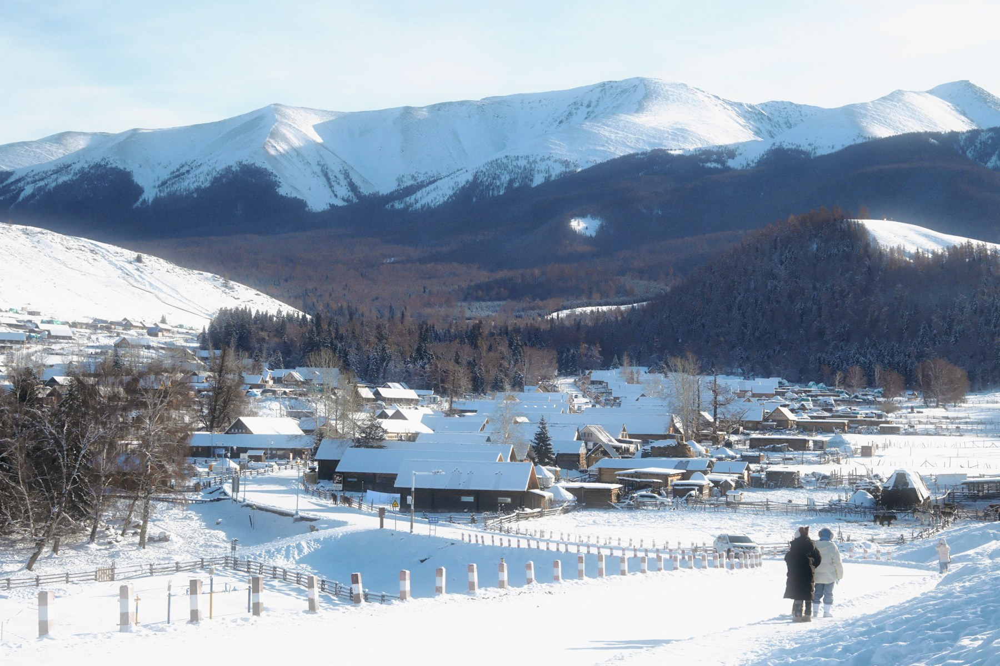
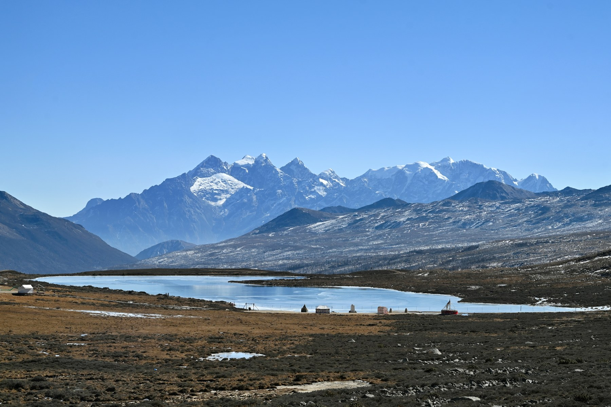
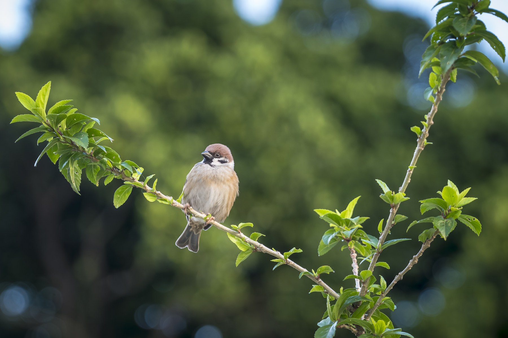
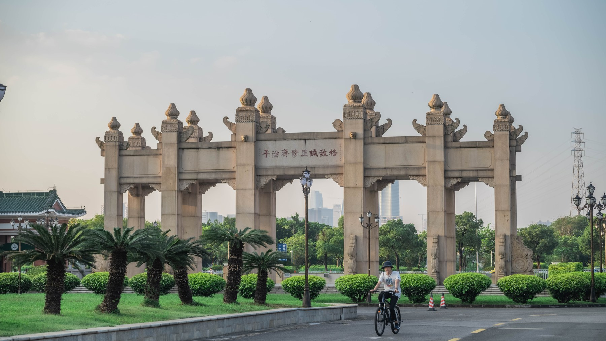
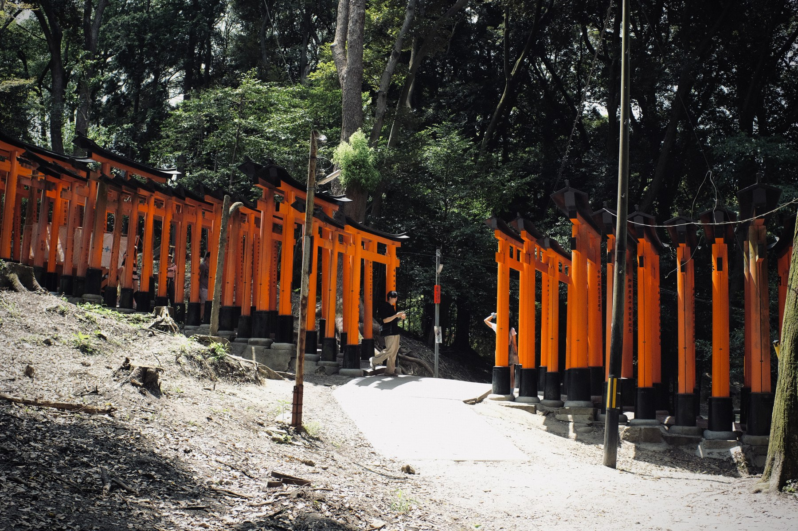
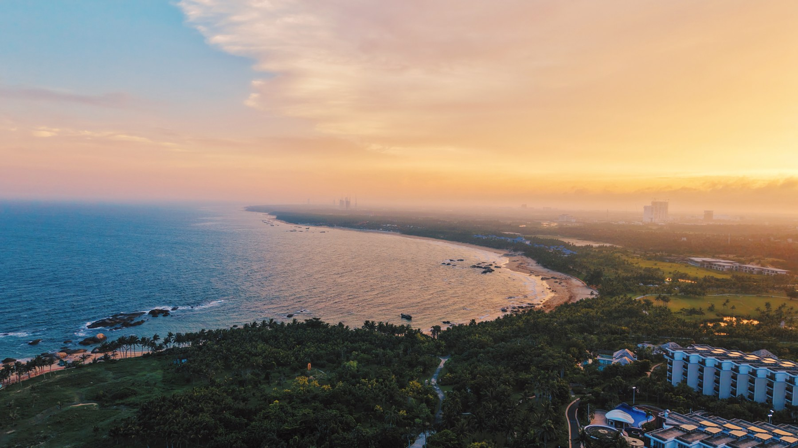
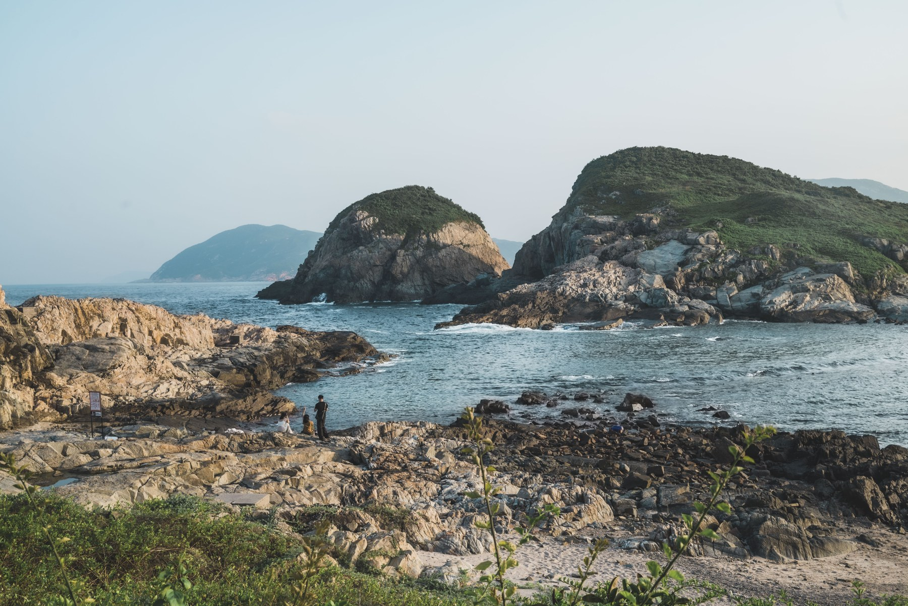
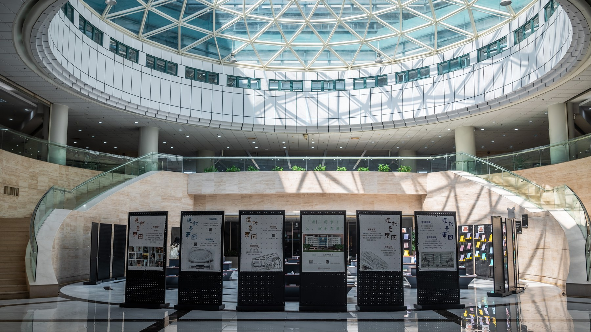
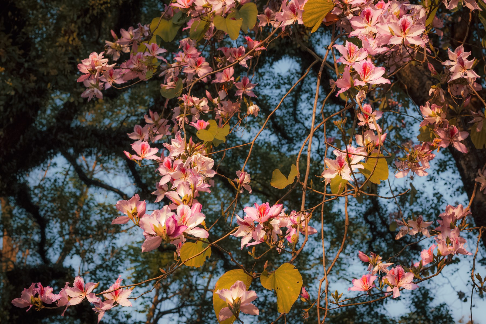
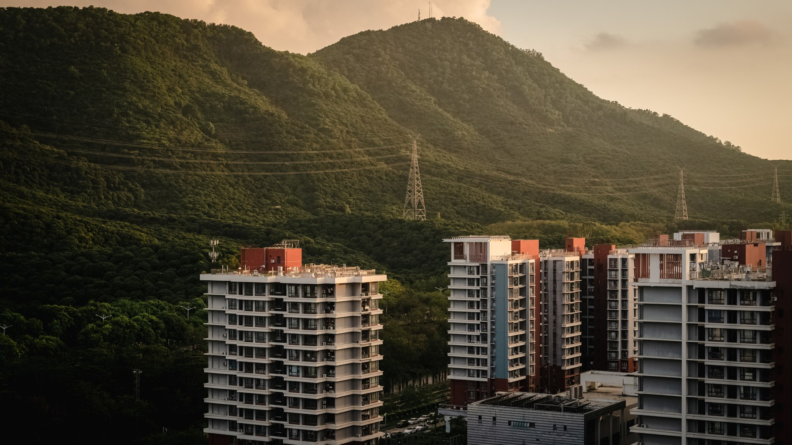
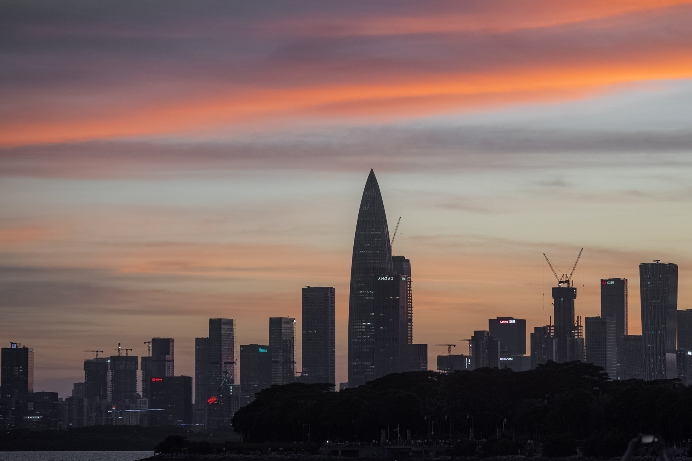
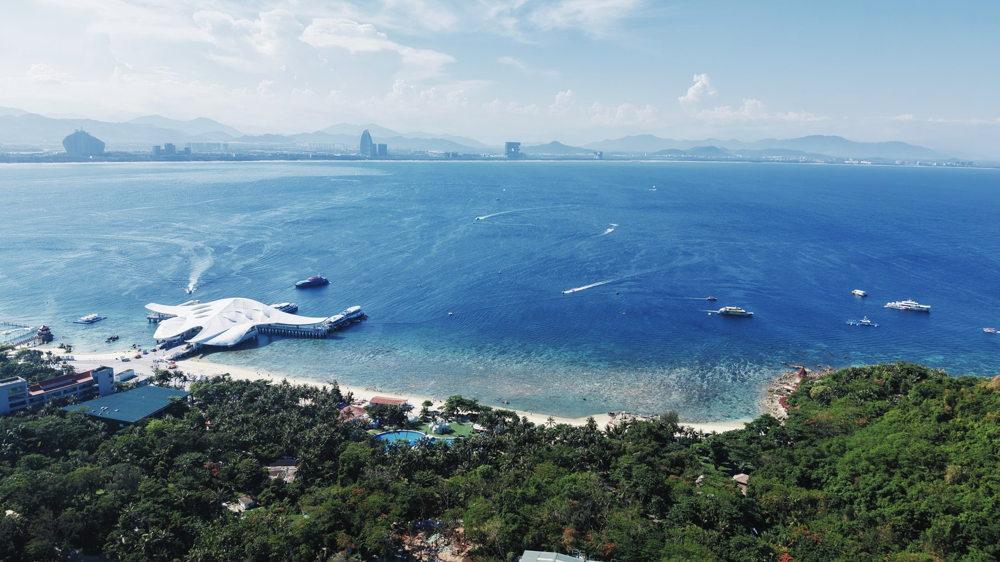
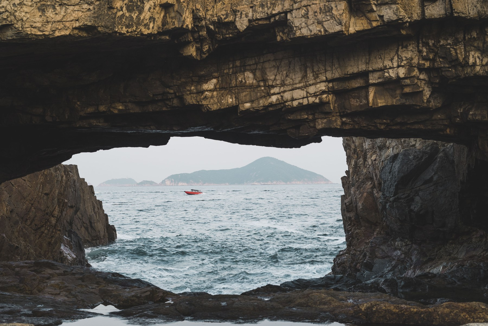
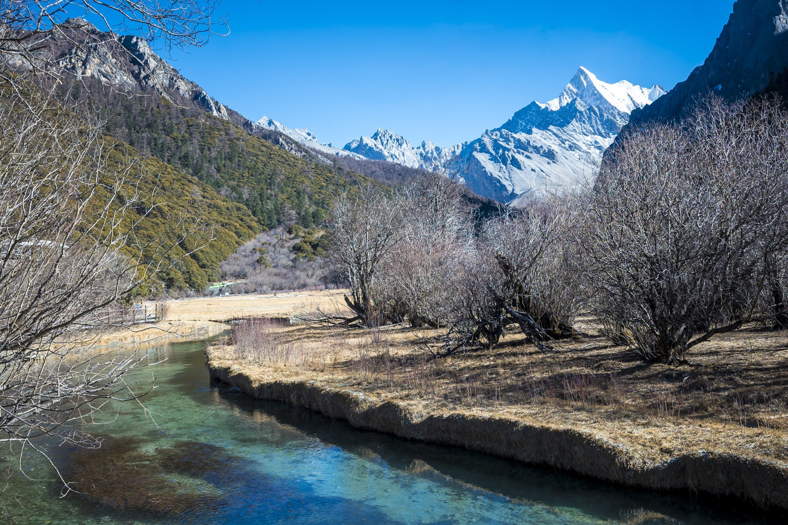
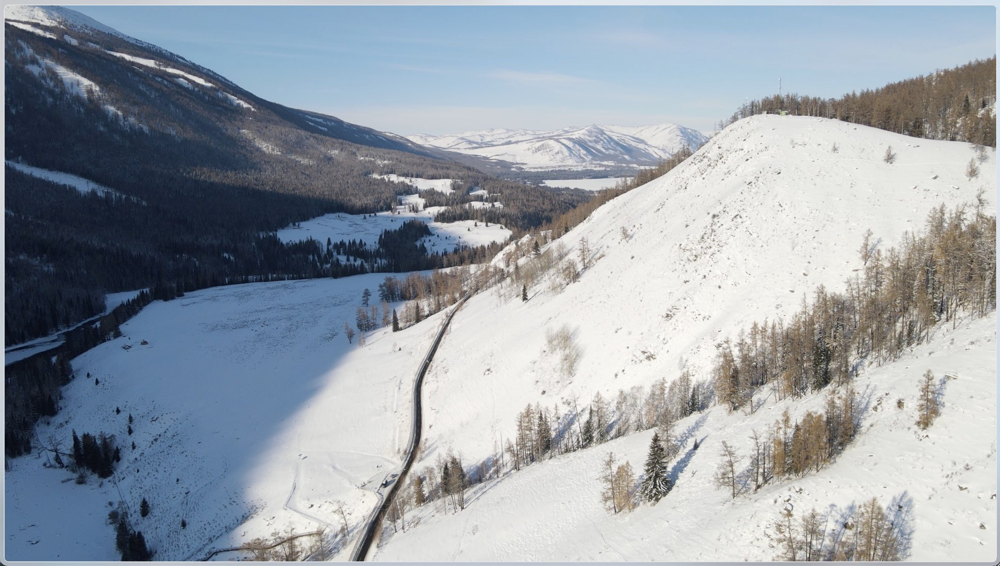
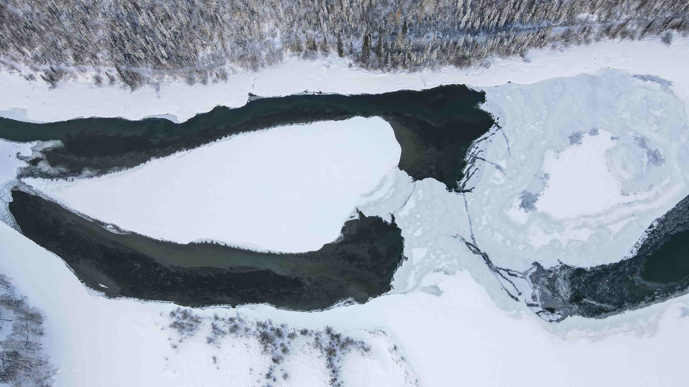